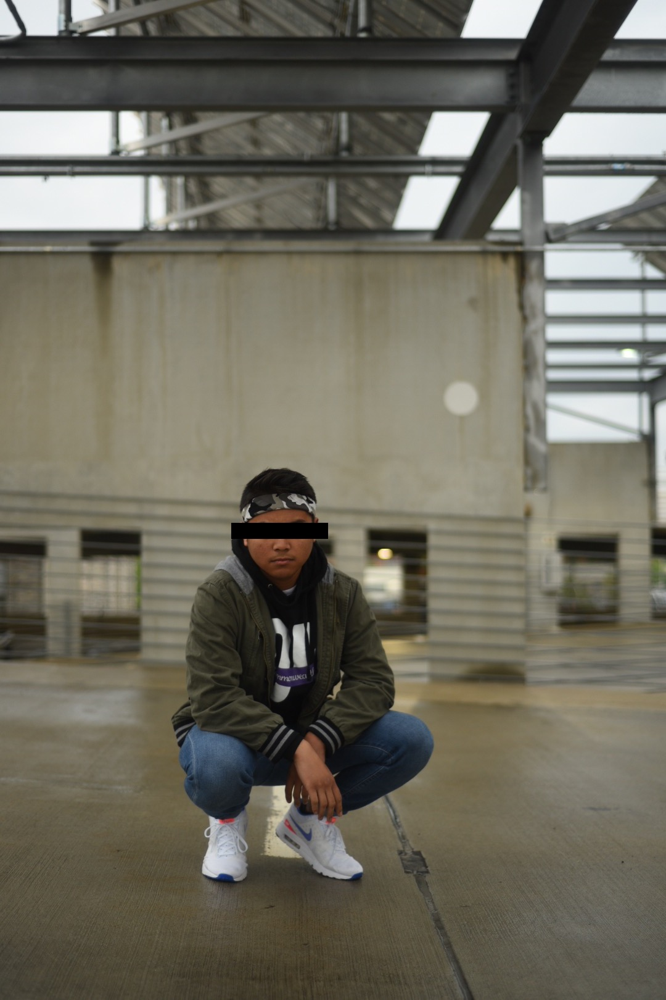

Interests

Peep my interests:
- Technical writing
-
I work as a technical writing intern at Network Infrastructure & Services.
I archive documents, give them appropriate labels, and organize them within a wiki database.
I also create flowcharts.
-
My internship has a lot to do with this course and VT-shaped students because it relates
to producing and organizing content online, and it is preparing me for a career post-graduation.
- Creative writing
-
Sometimes when I'm sad about girls, I write poetry in a little composition notebook.
I also like to write comedy scripts, but I do that on my laptop.
- Intramural football
-
I gained a lot of weight, so
I joined an intramural football team.
We are intermediate in co-rec (with women)
and beginner in men (without women).
We lose a lot.
- Comic books
-
Since I was eight-years-old, I loved reading comic books.
My favorite superheroes are Green Lantern, Daredevil, and Batman.
Reading comics is why I persued English in college.
- Collecting shoes
-
I spend a lot of money on shoes.
Adidas is on a roll with boost technology.
One day I'm going to look back on the time and money I spent on shoes, and I'm going to cry.